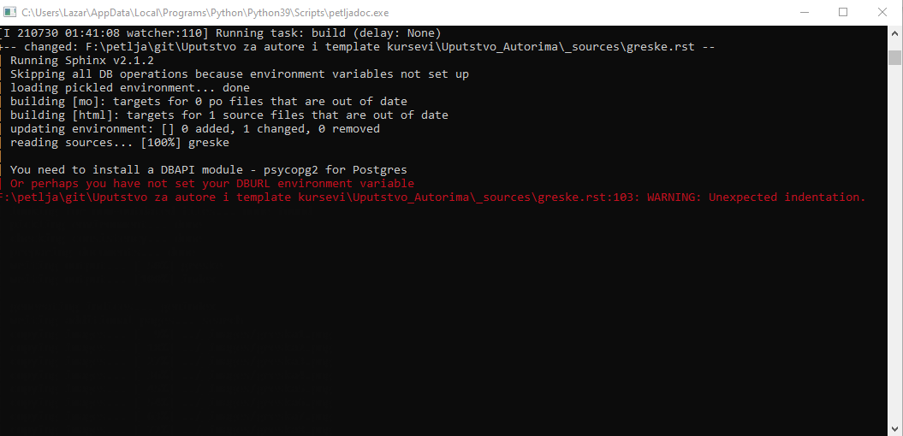

<!DOCTYPE html>
<html xmlns="http://www.w3.org/1999/xhtml" lang=""></html>
  <head>
    <meta charset="utf-8" />
    <meta name="viewport" content="width=device-width, initial-scale=1.0" />
<title>Грешке &#8212; Uputstvo Autorima</title>
    <link rel="stylesheet" href="_static/pygments.css" type="text/css" />
    <link rel="stylesheet" href="_static/basic.css" type="text/css" />
    <link rel="stylesheet" type="text/css" href="_static/activecode.css" />
    <link rel="stylesheet" type="text/css" href="_static/codemirror.css" />
    <link rel="stylesheet" type="text/css" href="_static/clickable.css" />
    <link rel="stylesheet" type="text/css" href="_static/pytutor.css" />
    <link rel="stylesheet" type="text/css" href="_static/modal-basic.css" />
    <link rel="stylesheet" type="text/css" href="_static/datafile.css" />
    <link rel="stylesheet" type="text/css" href="_static/dragndrop.css" />
    <link rel="stylesheet" type="text/css" href="_static/fitb.css" />
    <link rel="stylesheet" type="text/css" href="_static/matrixeq.css" />
    <link rel="stylesheet" type="text/css" href="_static/parsons.css" />
    <link rel="stylesheet" type="text/css" href="_static/lib/prettify.css" />
    <link rel="stylesheet" type="text/css" href="_static/poll.css" />
    <link rel="stylesheet" type="text/css" href="_static/showEval.css" />
    <link rel="stylesheet" type="text/css" href="_static/tabbedstuff.css" />
    <link rel="stylesheet" type="text/css" href="https://stackpath.bootstrapcdn.com/bootstrap/4.2.1/css/bootstrap.min.css" />
    <link rel="stylesheet" type="text/css" href="_static/video.css" />
    <link rel="stylesheet" type="text/css" href="_static/webgldemo.css" />
    <link rel="stylesheet" type="text/css" href="_static/webglinteractive.css" />
    <link rel="stylesheet" type="text/css" href="_static/karel.css" />
    <link rel="stylesheet" type="text/css" href="_static/notes.css" />
    <link rel="stylesheet" type="text/css" href="_static/simanim.css" />
    <link rel="stylesheet" type="text/css" href="_static/pycode.css" />
    <link rel="stylesheet" type="text/css" href="_static/p5js.css" />
    <link rel="stylesheet" type="text/css" href="_static/gallery.css" />
    <link rel="stylesheet" type="text/css" href="https://stackpath.bootstrapcdn.com/bootstrap/4.2.1/css/bootstrap.min.css" />
    <link rel="stylesheet" type="text/css" href="_static/video.css" />
    <link rel="stylesheet" href="_static/user-highlights.css" type="text/css" />
    <link rel="stylesheet" href="https://use.fontawesome.com/releases/v5.1.1/css/all.css" type="text/css" />
    <link rel="stylesheet" href="_static/bootstrap-4.0.0-dist/css/bootstrap.min.css" type="text/css" />
    <link rel="stylesheet" href="_static/flatly.min.css" type="text/css" />
    <link rel="stylesheet" href="_static/petlja-runestone.css" type="text/css" />
    <script id="documentation_options" data-url_root="./" src="_static/documentation_options.js"></script>
    <script type="text/javascript" src="_static/runestonebase.js"></script>
    <script type="text/javascript" src="_static/jquery.js"></script>
    <script type="text/javascript" src="_static/underscore.js"></script>
    <script type="text/javascript" src="_static/doctools.js"></script>
    <script type="text/javascript" src="_static/language_data.js"></script>
    <script type="text/javascript" src="_static/jquery.highlight.js"></script>
    <script type="text/javascript" src="_static/bookfuncs.js"></script>
    <script type="text/javascript" src="_static/codemirror.js"></script>
    <script type="text/javascript" src="_static/xml.js"></script>
    <script type="text/javascript" src="_static/css.js"></script>
    <script type="text/javascript" src="_static/python.js"></script>
    <script type="text/javascript" src="_static/htmlmixed.js"></script>
    <script type="text/javascript" src="_static/javascript.js"></script>
    <script type="text/javascript" src="_static/jquery_i18n/CLDRPluralRuleParser.js"></script>
    <script type="text/javascript" src="_static/jquery_i18n/jquery.i18n.js"></script>
    <script type="text/javascript" src="_static/jquery_i18n/jquery.i18n.messagestore.js"></script>
    <script type="text/javascript" src="_static/jquery_i18n/jquery.i18n.fallbacks.js"></script>
    <script type="text/javascript" src="_static/jquery_i18n/jquery.i18n.language.js"></script>
    <script type="text/javascript" src="_static/jquery_i18n/jquery.i18n.parser.js"></script>
    <script type="text/javascript" src="_static/jquery_i18n/jquery.i18n.emitter.js"></script>
    <script type="text/javascript" src="_static/jquery_i18n/jquery.i18n.emitter.bidi.js"></script>
    <script type="text/javascript" src="_static/activecode-i18n.en.js"></script>
    <script type="text/javascript" src="_static/skulpt.min.js"></script>
    <script type="text/javascript" src="_static/skulpt-stdlib.js"></script>
    <script type="text/javascript" src="_static/activecode.js"></script>
    <script type="text/javascript" src="_static/clike.js"></script>
    <script type="text/javascript" src="_static/timed_activecode.js"></script>
    <script type="text/javascript" src="_static/animationbase.js"></script>
    <script type="text/javascript" src="_static/mchoice.js"></script>
    <script type="text/javascript" src="_static/timedmc.js"></script>
    <script type="text/javascript" src="_static/timed.js"></script>
    <script type="text/javascript" src="_static/mchoice-i18n.en.js"></script>
    <script type="text/javascript" src="_static/clickable.js"></script>
    <script type="text/javascript" src="_static/timedclickable.js"></script>
    <script type="text/javascript" src="_static/d3.v2.min.js"></script>
    <script type="text/javascript" src="_static/jquery.ba-bbq.min.js"></script>
    <script type="text/javascript" src="_static/jquery.jsPlumb-1.3.10-all-min.js"></script>
    <script type="text/javascript" src="_static/pytutor.js"></script>
    <script type="text/javascript" src="_static/codelens.js"></script>
    <script type="text/javascript" src="_static/datafile.js"></script>
    <script type="text/javascript" src="_static/dragndrop.js"></script>
    <script type="text/javascript" src="_static/timeddnd.js"></script>
    <script type="text/javascript" src="_static/dragndrop-i18n.en.js"></script>
    <script type="text/javascript" src="_static/fitb.js"></script>
    <script type="text/javascript" src="_static/timedfitb.js"></script>
    <script type="text/javascript" src="_static/fitb-i18n.en.js"></script>
    <script type="text/javascript" src="_static/matrixeq.js"></script>
    <script type="text/javascript" src="_static/lib/prettify.js"></script>
    <script type="text/javascript" src="_static/lib/hammer.min.js"></script>
    <script type="text/javascript" src="_static/parsons.js"></script>
    <script type="text/javascript" src="_static/parsons-i18n.en.js"></script>
    <script type="text/javascript" src="_static/timedparsons.js"></script>
    <script type="text/javascript" src="_static/poll.js"></script>
    <script type="text/javascript" src="_static/reveal.js"></script>
    <script type="text/javascript" src="_static/shortanswer.js"></script>
    <script type="text/javascript" src="_static/timed_shortanswer.js"></script>
    <script type="text/javascript" src="_static/showEval.js"></script>
    <script type="text/javascript" src="_static/tabbedstuff.js"></script>
    <script type="text/javascript" src="_static/runestonevideo.js"></script>
    <script type="text/javascript" src="_static/webglinteractive.js"></script>
    <script type="text/javascript" src="_static/FileSaver.min.js"></script>
    <script type="text/javascript" src="_static/Blob.js"></script>
    <script type="text/javascript" src="_static/karelCorner.js"></script>
    <script type="text/javascript" src="_static/karelRobot.js"></script>
    <script type="text/javascript" src="_static/karelWorld.js"></script>
    <script type="text/javascript" src="_static/karelRobotDrawer.js"></script>
    <script type="text/javascript" src="_static/karelUI.js"></script>
    <script type="text/javascript" src="_static/karel.js"></script>
    <script type="text/javascript" src="_static/karel-i18n.en.js"></script>
    <script type="text/javascript" src="_static/notes.js"></script>
    <script type="text/javascript" src="_static/pygamelib-init.js"></script>
    <script type="text/javascript" src="_static/blockly/blockly_compressed.js"></script>
    <script type="text/javascript" src="_static/blockly/blocks_compressed.js"></script>
    <script type="text/javascript" src="_static/blockly/python_compressed.js"></script>
    <script type="text/javascript" src="_static/blockly/msg-sr.js"></script>
    <script type="text/javascript" src="_static/blockpy/utilities.js"></script>
    <script type="text/javascript" src="_static/blockpy/python_errors.js"></script>
    <script type="text/javascript" src="_static/blockpy/ast_node_visitor.js"></script>
    <script type="text/javascript" src="_static/blockpy/abstract_interpreter.js"></script>
    <script type="text/javascript" src="_static/blockpy/pytifa.js"></script>
    <script type="text/javascript" src="_static/blockpy/abstract_interpreter_definitions.js"></script>
    <script type="text/javascript" src="_static/blockpy/python_to_blockly.js"></script>
    <script type="text/javascript" src="_static/blockpy/imported.js"></script>
    <script type="text/javascript" src="_static/blockpy/blocks/class.js"></script>
    <script type="text/javascript" src="_static/blockpy/blocks/comment.js"></script>
    <script type="text/javascript" src="_static/blockpy/blocks/comprehensions.js"></script>
    <script type="text/javascript" src="_static/blockpy/blocks/dict.js"></script>
    <script type="text/javascript" src="_static/blockpy/blocks/if.js"></script>
    <script type="text/javascript" src="_static/blockpy/blocks/io.js"></script>
    <script type="text/javascript" src="_static/blockpy/blocks/lists.js"></script>
    <script type="text/javascript" src="_static/blockpy/blocks/sets.js"></script>
    <script type="text/javascript" src="_static/blockpy/blocks/loops.js"></script>
    <script type="text/javascript" src="_static/blockpy/blocks/parking.js"></script>
    <script type="text/javascript" src="_static/blockpy/blocks/tuple.js"></script>
    <script type="text/javascript" src="_static/blockpy/blocks/turtles.js"></script>
    <script type="text/javascript" src="_static/blockpy/blocks/text.js"></script>
    <script type="text/javascript" src="_static/blockpy-modal.js"></script>
    <script type="text/javascript" src="_static/simanim.js"></script>
    <script type="text/javascript" src="https://cdn.jsdelivr.net/pyodide/v0.16.1/full/pyodide.js"></script>
    <script type="text/javascript" src="_static/pycode.js"></script>
    <script type="text/javascript" src="//toolness.github.io/p5.js-widget/p5-widget.js"></script>
    <script type="text/javascript" src="_static/p5js.js"></script>
    <script type="text/javascript" src="_static/gallery.js"></script>
    <script type="text/javascript" src="_static/petljavideo.js"></script>
    <script type="text/javascript" src="_static/mchoice-i18n.sr-Cyrl.js"></script>
    <script type="text/javascript" src="_static/mchoice-i18n.sr.js"></script>
    <script type="text/javascript" src="_static/mchoice-i18n.sr-Latn.js"></script>
    <script type="text/javascript" src="_static/dragndrop-i18n.sr-Cyrl.js"></script>
    <script type="text/javascript" src="_static/dragndrop-i18n.sr.js"></script>
    <script type="text/javascript" src="_static/dragndrop-i18n.sr-Latn.js"></script>
    <script type="text/javascript" src="_static/fitb-i18n.sr-Cyrl.js"></script>
    <script type="text/javascript" src="_static/fitb-i18n.sr.js"></script>
    <script type="text/javascript" src="_static/fitb-i18n.sr-Latn.js"></script>
    <script type="text/javascript" src="_static/parsons-i18n.sr-Cyrl.js"></script>
    <script type="text/javascript" src="_static/parsons-i18n.sr.js"></script>
    <script type="text/javascript" src="_static/parsons-i18n.sr-Latn.js"></script>
    <script type="text/javascript" src="_static/activecode-i18n.sr-Cyrl.js"></script>
    <script type="text/javascript" src="_static/activecode-i18n.sr.js"></script>
    <script type="text/javascript" src="_static/activecode-i18n.sr-Latn.js"></script>
    <script type="text/javascript" src="_static/jquery-ui-1.10.3.custom.min.js"></script>
    <script type="text/javascript" src="_static/jquery-fix.js"></script>
    <script type="text/javascript" src="_static/bootstrap-4.0.0-dist/js/bootstrap.min.js"></script>
    <script type="text/javascript" src="_static/bootstrap-4.0.0-dist/js/bootstrap.bundle.min.js"></script>
    <script type="text/javascript" src="_static/bootstrap-sphinx.js"></script>
    <script type="text/javascript" src="_static/waypoints.min.js"></script>
    <script type="text/javascript" src="_static/rangy-core.js"></script>
    <script type="text/javascript" src="_static/rangy-textrange.js"></script>
    <script type="text/javascript" src="_static/rangy-cssclassapplier.js"></script>
    <script type="text/javascript" src="_static/user-highlights.js"></script>
    <script type="text/javascript" src="_static/jquery.idle-timer.js"></script>
    <script type="text/javascript" src="_static/processing-1.4.1.min.js"></script>
    <script type="text/javascript" src="_static/jquery.hotkey.js"></script>
    <script type="text/javascript" src="_static/jquery-migrate-1.2.1.min.js"></script>
    <link rel="index" title="Index" href="genindex.html" />
    <link rel="search" title="Search" href="search.html" />
    <link rel="next" title="Коришћење Github-a" href="github.html" />
    <link rel="prev" title="Приручници" href="prirucnici.html" />
<meta charset='utf-8'>
<meta http-equiv='X-UA-Compatible' content='IE=edge,chrome=1'>
<meta content='width=device-width, initial-scale=1.0, maximum-scale=1.0, user-scalable=0' name='viewport' />
<link rel="shortcut icon" href="_static/favicon.ico" type="image/ico" />

<script type="text/javascript">
  eBookConfig = {};
  eBookConfig.host = 'http://127.0.0.1:8000' ? 'http://127.0.0.1:8000' : 'http://127.0.0.1:8000';
  eBookConfig.app = eBookConfig.host + '/runestone';
  eBookConfig.ajaxURL = eBookConfig.app + '/ajax/';
  eBookConfig.course = 'Uputstvo_autorima';
  eBookConfig.logLevel = '0';
  eBookConfig.loginRequired = 'false';
  eBookConfig.build_info = "";
  eBookConfig.isLoggedIn = false;
  eBookConfig.useRunestoneServices = 'false';
  eBookConfig.python3 = 'true';
  eBookConfig.basecourse = 'Uputstvo_autorima';
  eBookConfig.runestone_version = '';
  eBookConfig.imagesDir = '_images/';
  eBookConfig.staticDir = '_static/';
  if(typeof(Sk) != "undefined")
      Sk.imgPath = eBookConfig.imagesDir;
</script>

<div id="fb-root"></div>


  </head><body>


<!-- Begin navbar -->

<nav id="navbar" class="navbar navbar-default navbar-fixed-top" role="navigation">

  <div class="container">

    <div class="navbar-header">
      <button type="button" class="navbar-toggle collapsed" data-toggle="collapse" data-target="#bs-example-navbar-collapse-1">
        <span class="sr-only">Toggle navigation</span>
        <span class="icon-bar"></span>
        <span class="icon-bar"></span>
        <span class="icon-bar"></span>
      </button>
      
    </div>

    <div class="collapse navbar-collapse" id="bs-example-navbar-collapse-1" style="margin-top: 10px; margin-left: 25px;">
      <ul class="nav navbar-nav">
        <li class="active"><a href="./">Uputstvo Autorima</a></li>
      </ul>
    </div>
  </div>
</nav>


<div class="container col-md-12" id="continue-reading"></div>

<div class="container col-md-8 col-md-offset-2" id="main-content" style="margin-top: 70px;">
  
  <div class="section" id="id1">
<h1>Грешке<a class="headerlink" href="#id1" title="Permalink to this headline">¶</a></h1>
<p>Приликом рада, често ће се десити да негде погрешите, било да се ради о погрешном форматирању .yaml фајла приликом рада са курсевима, било да се ради о синтаксној грешци приликом писања reStructuredText кода, било да се ради о укључивању фајла који не постоји… Кад год се деси нешто што Петљадок препознаје као грешку, у оквиру командног прозора у коме сте покренули <code class="docutils literal notranslate"><span class="pre">petljadoc</span> <span class="pre">preview</span></code> команду, црвеним словима исписаће се порука о грешци и та порука изгледаће као на следећој слици:</p>
<a class="reference internal image-reference" href="_images/greska1.png"></a>
<p>У оквиру те поруке, која год да је грешка направљена, писаће у ком фајлу је грешка настала и на којој линији кода у оквиру тог фајла се грешка појавила. Такође, у оквиру поруке биће назначено и шта није у реду са кодом, то јест због чега Петљадок није успео да на одговарајућ начин избилдује ваш пројекат. У овом конкретном случају, видимо да у фајлу <code class="docutils literal notranslate"><span class="pre">petladoc.rst</span></code> који се налази унутар фолдера <code class="docutils literal notranslate"><span class="pre">_sources</span></code> у оквиру нашег пројекта, на линији 402 на погрешан начин форматирана директива за укључивање слике.</p>
<p>Такође, када бисмо погледали како у браузеру изгледа фајл који је избилдован уз грешку, видећемо да се на месту где треба да се појави слика такође појављује иста порука о грешци</p>
<a class="reference internal image-reference" href="_images/greska2.png"></a>
<p>У овом примеру проблем је у томе што имамо празан ред вишка између реда у коме се налази директива <code class="docutils literal notranslate"><span class="pre">..</span> <span class="pre">image::</span></code> и њених опција <code class="docutils literal notranslate"><span class="pre">:width:</span></code> и <code class="docutils literal notranslate"><span class="pre">:align:</span></code>. Грешку отклањамо брисањем тог реда и наш материјал ће се, након што запамтимо промене, у браузеру приказати без упозорења о грешци.</p>

    <div class="course-box course-box-info">
        <div class="course-content">
            <p>
<p>Важно</p>
<p>Ако током рада приметите да се у браузеру приказују грешке на одређеним местима у материјалу на коме радите, <strong>НЕМОЈТЕ ИХ ИГНОРИСАТИ</strong> већ покушајте да их исправите или контактирајте неког из тима Петље да вам помогне у исправљању грешака. <strong>ВАШ МАТЕРИЈАЛ НЕЋЕ МОЋИ ДА СЕ ОБЈАВИ АКО ИМА БИЛО КАКВИХ УПОЗОРЕЊА О ГРЕШКАМА</strong></p>

    </p></div></div>
<div class="section" id="id2">
<h2>Честе грешке<a class="headerlink" href="#id2" title="Permalink to this headline">¶</a></h2>
<p>Сада ћемо показати неке најчешће грешке и објаснићемо на шта да обратите пажњу при њиховом отклањању.</p>
<div class="section" id="title-underline-too-short">
<h3>Наслов је погрешно форматиран - <code class="docutils literal notranslate"><span class="pre">title</span> <span class="pre">underline</span> <span class="pre">too</span> <span class="pre">short</span></code><a class="headerlink" href="#title-underline-too-short" title="Permalink to this headline">¶</a></h3>
<p>Ова грешка се најчешће јавља када се приликом наслова употреби мањи број карактера за подвлачење него број карактера у наслову. Порука о грешци ће изгледати овако у командном прозору:</p>
<a class="reference internal image-reference" href="_images/greska3.png"></a>
<p>Док ће грешка у браузеру изгледати овако:</p>
<a class="reference internal image-reference" href="_images/greska4.png"></a>
<p>Код који је грешку произвео изгледа овако:</p>
<a class="reference internal image-reference" href="_images/greska5.png"></a>
<p>Грешка се отклања тако што се подвлачење продужи тако да број карактера које користимо за подвлачење у наслову буде једнак броју карактера из наслова.</p>
</div>
<div class="section" id="image-file-not-readable">
<h3>Слика не постоји - <code class="docutils literal notranslate"><span class="pre">image</span> <span class="pre">file</span> <span class="pre">not</span> <span class="pre">readable</span></code><a class="headerlink" href="#image-file-not-readable" title="Permalink to this headline">¶</a></h3>
<p>Ова грешка јавља се када покушамо да укључимо слику коју Петљадок није могао да укључи у пројекат. Најчешће појављивање ове грешке дешава се зато што слика коју покушавамо да укључимо не постоји или зато што смо погрешно откуцали име слике. Грешка у командном прозору изгледа овако:</p>
<a class="reference internal image-reference" href="_images/greska6.png"></a>
<p>У браузеру неће бити исписана порука о грешци, али на месту где је требало да се појави слика стајаће само линк и иконица за слику уместо изрендероване слике:</p>
<a class="reference internal image-reference" href="_images/greska7.png"></a>
<p>Да бисте грешку отклонили најчешће ће бити довољно да проверите да ли фајл који желите да укључите стварно постоји у фолдеру <code class="docutils literal notranslate"><span class="pre">_images</span></code> или да ли сте добро откуцали име фајла који желите да укључите.</p>
</div>
<div class="section" id="document-isn-t-included-in-any-toctree">
<h3>Фајл није укључен у садржај- <code class="docutils literal notranslate"><span class="pre">document</span> <span class="pre">isn't</span> <span class="pre">included</span> <span class="pre">in</span> <span class="pre">any</span> <span class="pre">toctree</span></code><a class="headerlink" href="#document-isn-t-included-in-any-toctree" title="Permalink to this headline">¶</a></h3>
<p>Ова грешка јавља се зато што у фолдеру <code class="docutils literal notranslate"><span class="pre">_sources</span></code> или његовим потфолдерима имамо .rst фајл који није укључен ни у једну директиву <code class="docutils literal notranslate"><span class="pre">..</span> <span class="pre">toc::</span></code> (ни у један садржај) у оквиру материјалa који пишемо и упозорава нас да том фајлу неће моћи да се приступи кроз линкове у садржају.</p>
<a class="reference internal image-reference" href="_images/greska8.png"></a>
<p>Ако погледамо садржај нашег <code class="docutils literal notranslate"><span class="pre">_sources</span></code> фолдера, видимо да постоји фајл <em>github.rst</em>:</p>
<a class="reference internal image-reference" href="_images/greska9.png"></a>
<p>И он није укључен ни у један садржај у оквиру нашег пројекта. Ова грешка се отклања тако што све фајлове који се појављују у нашем пројекту укључимо у барем један садржај у оквиру пројекта.</p>
</div>
<div class="section" id="id3">
<h3>Директива није добила очекивани аргумент<a class="headerlink" href="#id3" title="Permalink to this headline">¶</a></h3>
<p>Ова порука о грешци сугерише да је нека директива очекивала да добије аргумент, али га није добила. Испод видимо пример <code class="docutils literal notranslate"><span class="pre">..</span> <span class="pre">image::</span></code> директиве која као аргумент није добила путању ка фајлу са сликом, коју очекује.</p>
<a class="reference internal image-reference" href="_images/greska10.png"></a>
<p>У браузеру ће се приказати грешка на следећи начин:</p>
<a class="reference internal image-reference" href="_images/greska11.png"></a>
<p>Грешку отклањамо тако што директиву форматирамо на подразумеван начин. За правилно форматирање директива погледајте <a class="reference external" href="https://petlja.github.io/demo_kurs/02_basics/02_directives.html#id37">демо курс</a>.</p>
<a class="reference internal image-reference" href="_images/greska9.png"></a>
</div>
<div class="section" id="unexpected-indentation">
<h3>Неочекивано увлачење - <code class="docutils literal notranslate"><span class="pre">unexpected</span> <span class="pre">indentation</span></code><a class="headerlink" href="#unexpected-indentation" title="Permalink to this headline">¶</a></h3>
<p>Ова грешка појављује се када Петљадок наиђе на увучени ред на месту где нема смисла да се увлачење појави. Како је у restructuredText
назубљивање јако важно, када се појави неочекивано увучен ред, Петљадок пријављује грешку. Та грешка изгледа овако:</p>
<a class="reference internal image-reference" href="_images/greska12.png"></a>
<p>У браузеру ће се та грешка овако приказати:</p>
<a class="reference internal image-reference" href="_images/greska13.png"></a>
<p>А изворни код који је ову грешку произвео изгледа овако:</p>
<a class="reference internal image-reference" href="_images/greska14.png"></a>
<p>Видимо да у овом случају између директиве <code class="docutils literal notranslate"><span class="pre">..</span> <span class="pre">image::</span></code> и пасуса изнад не постоји празан ред. Због тога Петљадок први ред директиве <strong>.. image:: ../_images/greska9.png</strong> тумачи као да је део параграфа који се налази изнад и онда пријављује грешку када наиђе на увлачење у следећем реду. Ако одвојимо позив директиве од параграфа, Петљадок ће знати где се параграф завршава, а где почиње директива и препознаће због чега су наредна два реда увучена, па се грешка неће појавити.</p>
<p>Како бисте избегли овакав проблем, увек обратите пажњу да пре и после директива и параграфа остављате празан ред.</p>
<p>Наравно, ова грешка ће се појавити сваки пут када се појави неочекивано увлачење тако да морате обратити пажњу на назубљивање у .rst фајловима. За правилно форматирање погледајте поглавље <a class="reference external" href="https://petlja.github.io/demo_kurs/02_basics/01_formatting.html#id6">Форматирање</a> Демо курса.</p>
</div>
<div class="section" id="inline-start-string-without-end-string">
<h3>Незатворено обележавање текста - <code class="docutils literal notranslate"><span class="pre">Inline</span> <span class="pre">----</span> <span class="pre">start-string</span> <span class="pre">without</span> <span class="pre">end-string</span></code><a class="headerlink" href="#inline-start-string-without-end-string" title="Permalink to this headline">¶</a></h3>
<p>Овај тип грешке јавља се када у параграфу обележимо део текста посебним карактерима (за подебљавање, искошавање и сл.), али нигде не затворимо обележавање. Порука о грешци излгеда овако:</p>
<a class="reference internal image-reference" href="_images/greska15.png"></a>
<p>Изворни параграф изгледа овако:</p>
<a class="reference internal image-reference" href="_images/greska16.png"></a>
<p>Можемо видети да смо употребили ** како бисмо подебљали део текста, али нигде нисмо ставили крај подебљавања. Због тога Петљадок не зна који део текста да подебља и две звездице не тумачи као означавање подебљавања, већ као обична два караткера. У браузеру овај параграф изгледа овако</p>
<a class="reference internal image-reference" href="_images/greska17.png"></a>
<p>За правилно форматирање погледајте поглавље <a class="reference external" href="https://petlja.github.io/demo_kurs/02_basics/01_formatting.html#id6">Форматирање</a> Демо курса.</p>
</div>
<div class="section" id="id4">
<h3>Више пута је употребљен исти ИД<a class="headerlink" href="#id4" title="Permalink to this headline">¶</a></h3>
<p>Када користимо директиве које као аргумент узимају јединствени стринг који служи као јединствени идентификатор на нивоу целог материјала, добићемо грешку ако покушамо да исти идентификатор употребимо више пута. Порука о грешци коју ћемо добити изгледа овако</p>
<a class="reference internal image-reference" href="_images/greska18.png"></a>
<p>Док изворни код изгледа овако:</p>
<a class="reference internal image-reference" href="_images/greska19.png"></a>
<p>Видимо да смо једну за другом позвали две директиве за питање са истим идентификатором <code class="docutils literal notranslate"><span class="pre">mchoice_sample_question1</span></code>. Због тога смо добили поруку о грешци, а у браузеру ће бити приказано само прво питање.</p>
<a class="reference internal image-reference" href="_images/greska20.png"></a>
</div>
<div class="section" id="yaml">
<h3>Грешке у форматирању .yaml фајла у курсевима<a class="headerlink" href="#yaml" title="Permalink to this headline">¶</a></h3>
<p>Често се дешава да приликом израде курса погрешимо при форматирању .yaml фајла. Као што смо рекли у поглављу о курсевима где смо објаснили <a class="reference external" href="Форматирање.yamlфајла">форматирање овог фајла</a>, .yaml се <strong>МОРА</strong> форматирати на објашњен начин како би пројекат уопште могао да се прикаже у браузеру.</p>
<p>Грешке које се тичу форматирања овог фајла најчешће су везане за то да је неки обавезни елемент пропуштен, назубљивање није добро изведено или се два пута употребио исти guid.</p>

    <div class="course-box course-box-info">
        <div class="course-content">
            <p>
<p>Најбољи савет овде би био да чим видите поруку о грешци која се тиче .yaml фајла одете на поглавље о <a class="reference external" href="Форматирање.yamlфајла">форматирању овог фајла</a> и линију свог .yaml-а у којој је пријављена грешка упоредите са примерима.</p>

    </p></div></div>
<p>Поруке о грешци могу изгледати различито. У следећем примеру смо из .yaml фајла изоставили обавезни атрибут који одређује кратак опис и добили смо следећу поруку:</p>
<a class="reference internal image-reference" href="_images/greska21.png"></a>
<p>Ако изоставимо неки други елемент, на пример категорију description добићемо овакву поруку:</p>
<a class="reference internal image-reference" href="_images/greska22.png"></a>
<p>Важно је да увек проверимо наш .yaml фајл, упоредимо га са примерима и видимо због чега је Петљадок пријавио грешку у тој линији фајла.</p>
<p>Често ће се десити да са погрешно форматираним .yaml-ом Пељадок неће ни моћи да прикаже пројекат у браузеру. Међутим, дешаваће се да у током рада, док се пројекат већ приказује у браузеру, промени нешто у .yaml-у, на пример док смо додавали нову лекцију, и да при томе настане грешка. У том случају у самом браузеру добићемо поруку о грешци која изгледа овако:</p>
<a class="reference internal image-reference" href="_images/greska23.png"></a>
<p>Ова конкретна грешка настала је зато што у коду, у линији 33, <code class="docutils literal notranslate"><span class="pre">activities:</span></code> нисмо поравнали са <code class="docutils literal notranslate"><span class="pre">folder</span></code>, па је Петљадок пријавио грешку.</p>
<a class="reference internal image-reference" href="_images/greska24.png"></a>
</div>
<div class="section" id="guid-yaml">
<h3>Дупликат guid у .yaml фајлу<a class="headerlink" href="#guid-yaml" title="Permalink to this headline">¶</a></h3>
<p>Још један чест тип грешке у .yaml-у дешава се када се два пута појави исти guid код различитих елемеанта у .yaml-а. Пошто guid треба да буде јединствени идентификатор, ако два пута употребимо исти, Петљадок ће пријавити грешку.</p>
<p>Ако се ова грешка деси у току приказивања пројекта у браузеру, порука о грешци изгледаће овако:</p>
<a class="reference internal image-reference" href="_images/greska25.png"></a>
<p>Ако је грешка направљена пре него што смо покренули команду <code class="docutils literal notranslate"><span class="pre">petljadoc</span> <span class="pre">preview</span></code>, пројекат неће моћи да се уопште прикаже у браузеру.</p>
<p>Довољно је да један од та два guida замените новим guid-ом и грешка ће бити отклоњена.</p>
</div>
</div>
<div class="section" id="id7">
<h2>Корисни линкови<a class="headerlink" href="#id7" title="Permalink to this headline">¶</a></h2>
<ul class="simple">
<li><p>Демо курс као помоћ за форматирање фајлова - <a class="reference external" href="https://petlja.github.io/demo_kurs/">https://petlja.github.io/demo_kurs/</a></p></li>
<li><p>Поглавље <a class="reference external" href="https://www.sphinx-doc.org/en/master/usage/restructuredtext/index.html">restructuredText</a> из документације Sphinx-а</p></li>
<li><p><a class="reference external" href="https://runestone.academy/runestone/static/authorguide/index.html">Runestone Author’s Guide</a></p></li>
<li><p><a class="reference external" href="https://github.com/Petlja/PetljaDoc/blob/master/README.md">PetljaDoc README</a></p></li>
</ul>
</div>
</div>


  
      <div class="col-md-12">
<ul class="pager">
        <li id="relations-prev" title='Previous chapter - Приручници' data-toggle="tooltip"><a href="prirucnici.html">Previous chapter</a></li>
    
        <li id="relations-next" title='Next chapter - Коришћење Github-a' data-toggle="tooltip"><a href="github.html">Next chapter</a></li>
</ul>

<!-- <ul class="pager"> -->
    <!-- -->
        <!-- <li id="relations-prev" title='Претходно поглавље - Приручници' data-toggle="tooltip"><a href="prirucnici.html">Претходно поглавље</a></li> -->
    <!--  -->
    <!-- -->
        <!-- <li id="relations-next" title='Следеће поглавље - Коришћење Github-a' data-toggle="tooltip"><a href="github.html">Следеће поглавље</a></li> -->
    <!-- -->
<!-- </ul> -->

<script type="text/javascript">

  $('#relations-prev').tooltip({'placement':'right', 'selector': '', 'delay': { show: 100, hide: 50}});
  $('#relations-next').tooltip({'placement':'left', 'selector': '', 'delay': { show: 100, hide: 50}});

</script>
</div>
  
</div>
<footer class="footer col-md-12">
    <div class="container">
        <div class="text-center">
            <hr>
            <p class="text-muted">
                <span class="pull-left">&copy; 2019 Petlja (Created using  <a href="https://pypi.org/project/Sphinx/">Swinx</a>, <a href="http://runestoneinteractive.org/">RunestoneComponents</a> and <a href="https://github.com/Petlja/PetljaDoc">PetljaDoc</a>)</span>
            </p>
        </div>
    </div>
</footer>


<script type="text/javascript">
  var _gaq = _gaq || [];
  _gaq.push(['_setAccount', 'UA-32029811-1']);
  _gaq.push(['_trackPageview']);

  (function() {
    var ga = document.createElement('script'); ga.type = 'text/javascript'; ga.async = true;
    ga.src = ('https:' == document.location.protocol ? 'https://ssl' : 'http://www') + '.google-analytics.com/ga.js';
    var s = document.getElementsByTagName('script')[0]; s.parentNode.insertBefore(ga, s);
  })();
</script>


  </body>
</html>